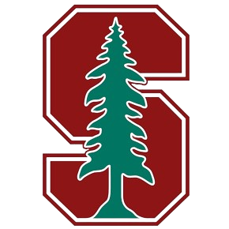
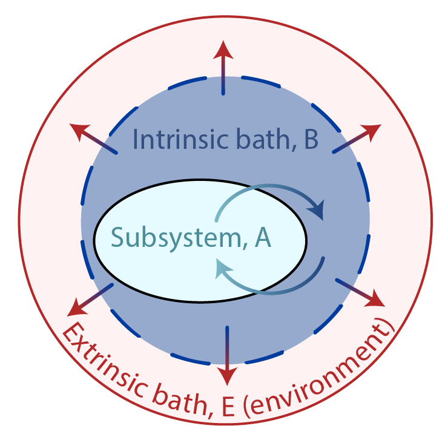

Divesh Soni
dsoni[at]nullcaltech.edu
About Me
I am currently a Ph.D. student at Caltech, working primarily with Sergio Pellegrino to develop a next generation Space Solar Power Satellite. In my undergrad, I worked with Kurien Isac at Indian Institute of Space Science and Technology(IIST), where I worked on Unfurlable Antenna prototype to based on tensegrity structure mechanics.
My research has touched on many aspects of quantum information science (QIS), including computing, simulation, and metrology. My postdoctoral research specifically focuses on developing the light-matter interface of the tweezer platform through a novel optical cavity architecture, with applications across QIS.
Education

California Institute of Technology, Pasadena, CA
Master of Technology • Space Engineering (Solids, Mathematics and Controls track ) • 2021-2022 •

Indian Institute of Space Science and Technology, Thiruvananthapuram, India
Bachelor of Technology • Aerospace Engineering (Class rank 2) • 2012-2016
Academic Employment

Stanford University, Stanford, CA
Postdoctoral Scholar • 2024 - Current
Science Fellow and Urbanek-Chodorow Fellow
Highlights at a glance
For a full list, see my CVPublications: 16, including 7 first-author
• Nature (3)
• Nature Physics (2)
• Phys. Rev. Lett. (2)
• Phys. Rev. X (1)
• Phys. Rev. X Quantum (1)
• Preprint (4)
• Other (3)
Presentations: >15, including >10 invited
Invited talks at venues such as:
• Lindau Nobel Meeting at Lindau, Germany (2024)
• DAMOP at Fort Worth, TX (2024)
• The Simons Institute at Berkeley, CA (2024) [video]
• Google Quantum AI at Santa Barbara, CA (2024)
• Physics of Quantum Electronics (PQE) at Snowbird, CO (2024)
• Boeing Quantum Creator's Prize Symposium at Chicago, IL (2023) [video]
Selected awards and fellowships
• Stanford Science Fellowship, Stanford University (2024)
• Boeing Quantum Creator's Prize, University of Chicago (2023)
• James A. Cullen Memorial Prize, Caltech (2023)
• Eddleman Graduate Fellowship, Caltech (2021)
• Thomas Brown Memorial Award, Harvey Mudd College (2018)
Selected publications
* indicates co-first author. For a full list, see Google Scholar
|  |
Universal fluctuations and noise learning from Hilbert-space ergodicity
|
|
Benchmarking highly-entangled states on a 60-atom analogue quantum simulator
|
|
Multi-ensemble metrology by programming local rotations with atom movements
|
|
Erasure conversion in a high-fidelity Rydberg quantum simulator
|
|
Preparing random states and benchmarking with many-body quantum chaos
|

{kind=link}
{kind=link}
{kind=link}
{kind=link}
{kind=link}